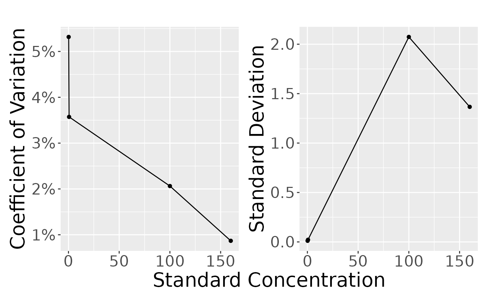

Estimating Residual Variability and LLOQ
Omar Elashkar
Source:vignettes/Estim_residuals.Rmd
Estim_residuals.Rmd##
## Attaching package: 'dplyr'## The following objects are masked from 'package:stats':
##
## filter, lag## The following objects are masked from 'package:base':
##
## intersect, setdiff, setequal, union
d <- read.csv(system.file("extdata", "GU_1.csv", package = "PKbioanalysis"))
head(d)## TYPE conc stdconc
## 1 LLOQ 0.232 0.2
## 2 LLOQ 0.206 0.2
## 3 LLOQ 0.203 0.2
## 4 LLOQ 0.202 0.2
## 5 LLOQ 0.207 0.2
## 6 LLOQ 0.212 0.2
only_qc <- d |> filter(TYPE %in% c("LLOQ", "LQC", "MQC", "HQC"))
only_qc <- only_qc |>
group_by(TYPE, stdconc) |>
summarize(
mean = mean(conc),
sd = sd(conc),
cv = sd(conc)/mean(conc)*100,
n = n()
)## `summarise()` has regrouped the output.
## ℹ Summaries were computed grouped by TYPE and stdconc.
## ℹ Output is grouped by TYPE.
## ℹ Use `summarise(.groups = "drop_last")` to silence this message.
## ℹ Use `summarise(.by = c(TYPE, stdconc))` for per-operation grouping
## (`?dplyr::dplyr_by`) instead.
only_qc## # A tibble: 4 × 6
## # Groups: TYPE [4]
## TYPE stdconc mean sd cv n
## <chr> <dbl> <dbl> <dbl> <dbl> <int>
## 1 HQC 160 157. 1.37 0.868 6
## 2 LLOQ 0.2 0.210 0.0112 5.32 6
## 3 LQC 0.6 0.613 0.0219 3.57 6
## 4 MQC 100 100. 2.07 2.06 6
plot_var_pattern(only_qc)
fit <- fit_var(d)
formated_print(fit)| Error Type | Estimate | Lower CI | Upper CI | Method | Gradient | SE | RSE% |
|---|---|---|---|---|---|---|---|
| Constant | 0.016 | 0.008 | 0.033 | nlminb | 0.000 | 0.006 | 37.6% |
| Proportional | 3.28% | 2.45% | 4.39% | nlminb | 0.000 | 0.005 | 15.0% |
Estimate LLOQ
estim_lloq(add_err = 0.016, prop_err = 0.032, cv_lloq = 0.1 , cv_lqc = 0.05)## $lloq
## [1] 0.1688801
##
## $lqc
## [1] 0.5066402
##
## $lqc_x2
## [1] 1.01328
##
## $rsd_lloq
## [1] 0.1
##
## $rsd_lqc
## [1] 0.04495925
##
## $rsd_lqc_x2
## [1] 0.0356838
##
## $add_err
## [1] 0.016
##
## $prop_err
## [1] 0.032
##
## $lloq_rsd_contr
## [1] 0.1
##
## $lqc_rsd_contr
## [1] 0.05Estimated dilution limit
Divide additive/proportional error
estim_dil_limit(add_err = 0.016, prop_err = 0.032, lloq = 0.2)## [1] 0.5